Site Reliability Engineering report following incident response and infrastructure provisioning work.
This assignment extends the previous incident response and Terraform infrastructure work by adding SRE automation, monitoring-based alerting, capacity testing, and scaling analysis. The system is a Dockerized microservices application with a frontend gateway, five backend services, a database container, and an observability stack.
The previous incident was caused by an invalid database connection configuration. The new automation reduces this risk through environment validation, Docker health checks, restart policies, and Prometheus alert rules.
| Evaluation / Deliverable Item | Implementation in This Submission | Evidence |
|---|---|---|
| Automation implementation | Docker Compose startup, pre-deployment configuration validation, Docker health checks, and automatic restart policies. | docker-compose.yml, scripts/start-stack.ps1, scripts/validate-env.ps1, Figure 1. |
| Monitoring and alerting quality | Prometheus scrapes every service and loads alert rules for service downtime, unhealthy state, error rate, latency, CPU, memory, and restarts. | prometheus/prometheus.yml, prometheus/alerts.yml, Figures 4-6. |
| Capacity planning depth | Load simulation, RPS, error rate, latency, CPU, memory, restart metrics, and bottleneck analysis. | scripts/load-test.mjs, scripts/prometheus-snapshot.ps1, Figures 7-9. |
| Integration with previous assignments | Builds on Assignment 4 incident by validating database configuration and detecting service failure. Builds on Assignment 5 by keeping Terraform as the infrastructure layer. | Sections 5 and 8, incident and recovery screenshots. |
| Scalability and resilience demonstration | Recovery is demonstrated by stopping order-service, observing target failure and a firing alert, then restarting the service. Scaling strategies are proposed. | Figures 10-14, Section 8. |
The system contains the following Dockerized components:
8080.4000.4001.4002.4003.4004.9090.3000.The full stack can be deployed using one PowerShell command:
.\scripts\start-stack.ps1
This script validates configuration first and then runs:
docker compose up -d --build
The pre-deployment validation script checks the required configuration keys:
FIREBASE_PROJECT_IDFIREBASE_CREDENTIALS_HOST_PATHCORS_ORIGINSMONGO_URL
It also rejects the known incident simulation value mongodb://wrong-mongodb:27017/shop, which helps
prevent a repeat of the earlier database misconfiguration incident.
All backend services expose /health and /metrics. Docker Compose includes health checks
and restart: unless-stopped policies. This gives the system automatic failure detection at the
container level and restart recovery when a service exits unexpectedly.
healthcheck: test: ["CMD-SHELL", "node -e ... /health ..."] interval: 10s timeout: 5s retries: 3 start_period: 20s restart: unless-stopped
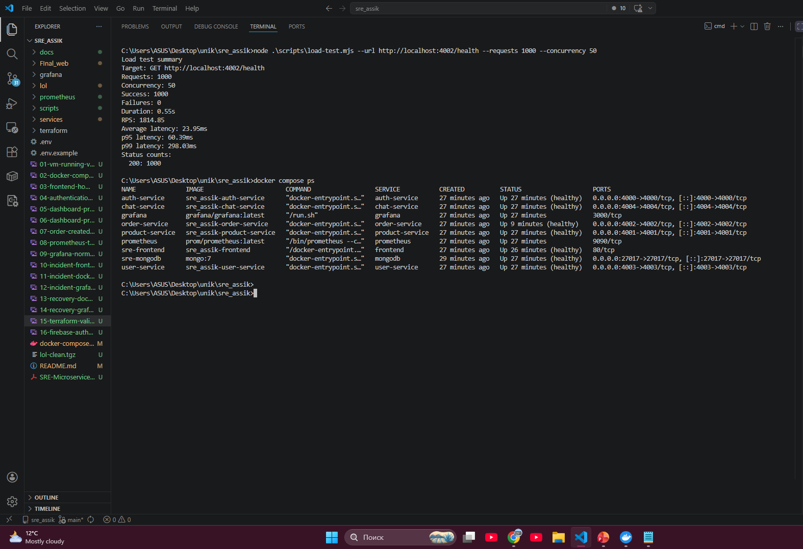
Figure 1. Docker Compose confirms that the application containers are running and healthy.
The service health endpoints return JSON status responses. Database-backed services also report the database connection state. This supports both manual troubleshooting and automated container health checks.
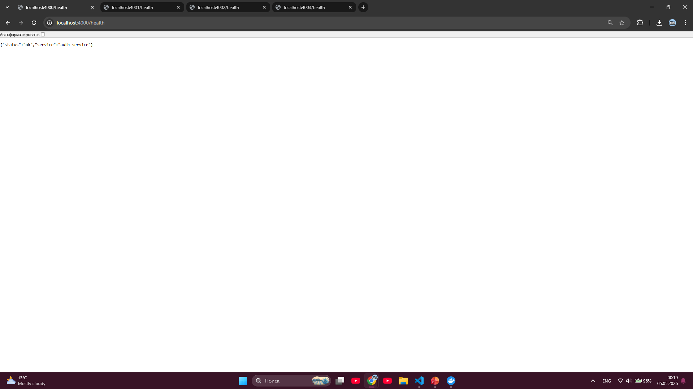
Figure 2a. auth-service returns status: ok.
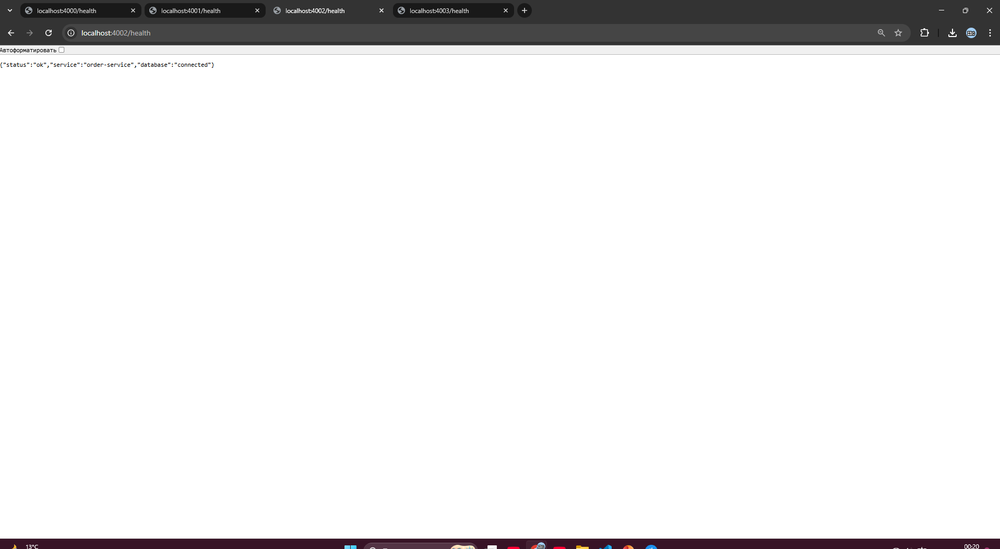
Figure 2b. order-service returns status: ok and database: connected.
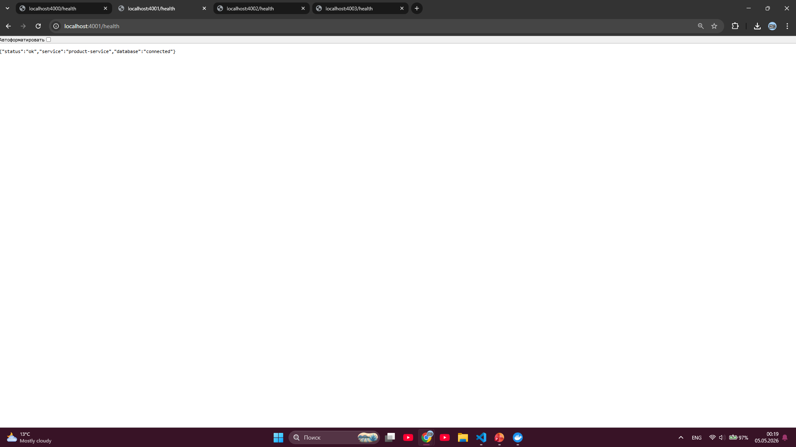
Figure 2c. product-service returns status: ok and database: connected.
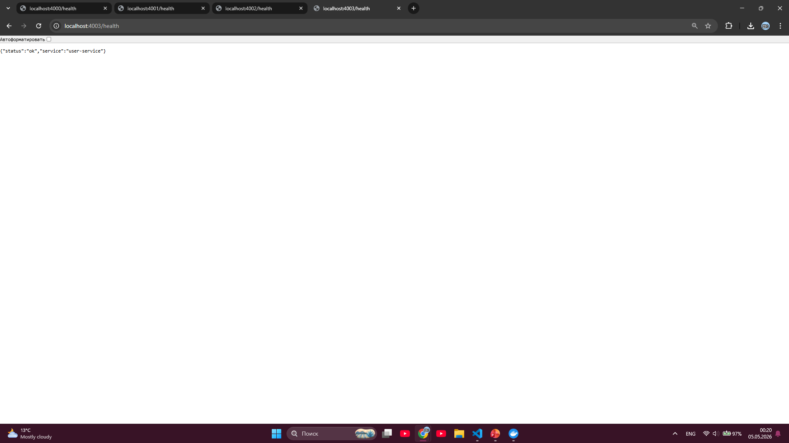
Figure 2d. user-service returns status: ok.
Prometheus is configured with a 5-second scrape interval and collects metrics from each backend service.
rule_files: - /etc/prometheus/alerts.yml
Implemented alert rules:
ServiceDown: Prometheus cannot scrape a service.ServiceUnhealthy: a service health metric reports unhealthy state.HighErrorRate: more than 5 percent recent HTTP responses are errors.HighLatency: p95 latency is above 1 second.HighProcessCpu: a service process uses more than 0.8 CPU cores.HighProcessMemory: a service process uses more than 300 MB resident memory.ServiceRestartedRecently: a service process start time changed within 10 minutes.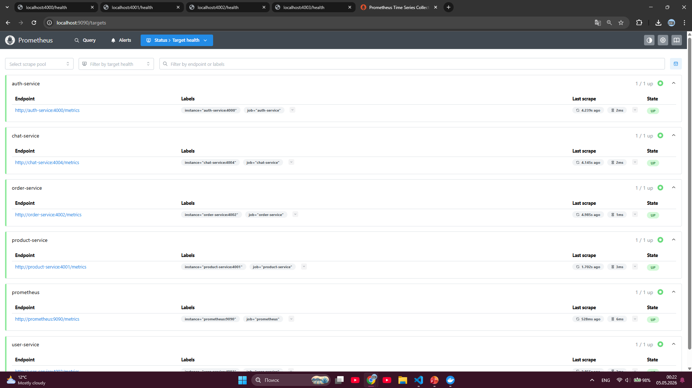
Figure 3. Prometheus target health page shows service metric endpoints in the UP state.
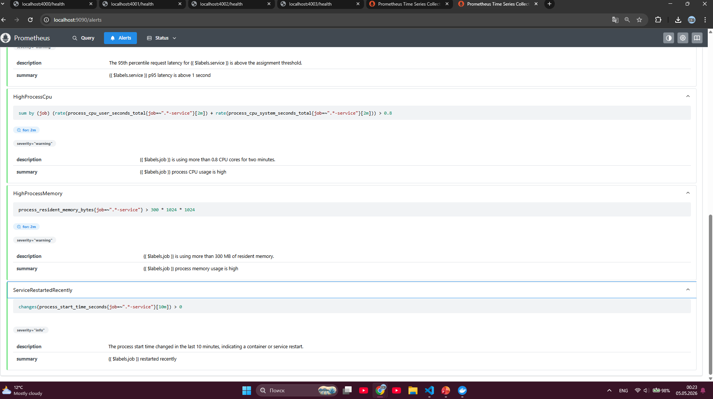
Figure 4. Alert rules for service downtime, unhealthy state, high error rate, and high latency.
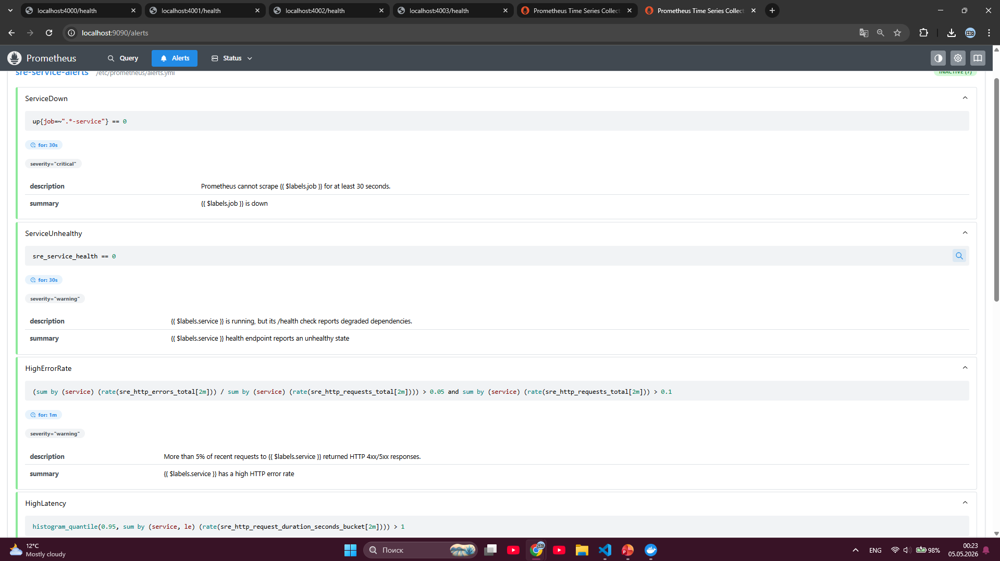
Figure 5. Alert rules for high process CPU, high process memory, and recent service restarts.
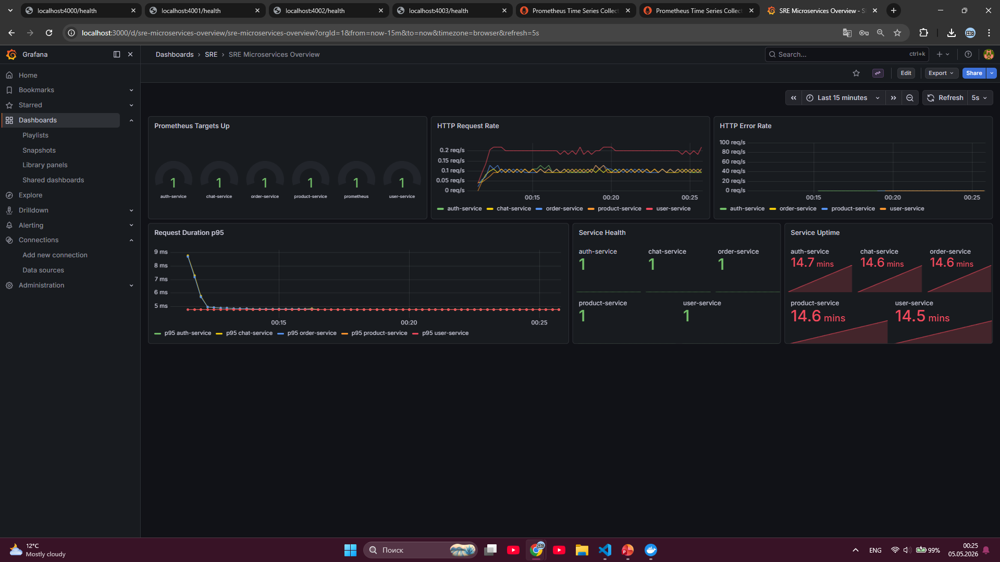
Figure 6. Grafana dashboard during normal operation: targets are up, error rate is zero, and service health values are 1.
A Node.js load-test script was added to generate concurrent requests and report request rate, success count, failure count, average latency, p95 latency, and p99 latency.
node .\scripts\load-test.mjs --url http://localhost:4002/health --requests 1000 --concurrency 50
The load test focused on order-service because this service is the main capacity risk: it owns order
workflows and depends on the database layer. A health endpoint was used for repeatable local load generation
without requiring live Firebase user tokens.
Production-like testing of POST /api/orders and GET /api/orders/my requires valid Firebase
ID tokens and realistic product/user data. For this assignment, the /health endpoint was used as a
controlled baseline to measure service availability, request handling, latency, and observability behavior without
introducing authentication-token setup as a separate variable. Therefore, the result should be interpreted as a
local baseline capacity test, not as the absolute production capacity of the order workflow.
| Metric | Observed Value | Interpretation |
|---|---|---|
| Total requests | 1000 | The test generated enough traffic to create a clear request-rate spike. |
| Concurrency | 50 | Requests were sent concurrently instead of one by one. |
| Success / Failures | 1000 success / 0 failures | The service stayed available during the test. |
| Local script RPS | 1814.85 requests/second | The lightweight health endpoint handled local traffic without saturation. |
| Average latency | 23.95 ms | Average response time remained low. |
| p95 latency | 60.39 ms | 95 percent of requests completed below this threshold. |
| p99 latency | 298.03 ms | A small number of requests were slower, but still below the 1 second alert threshold. |
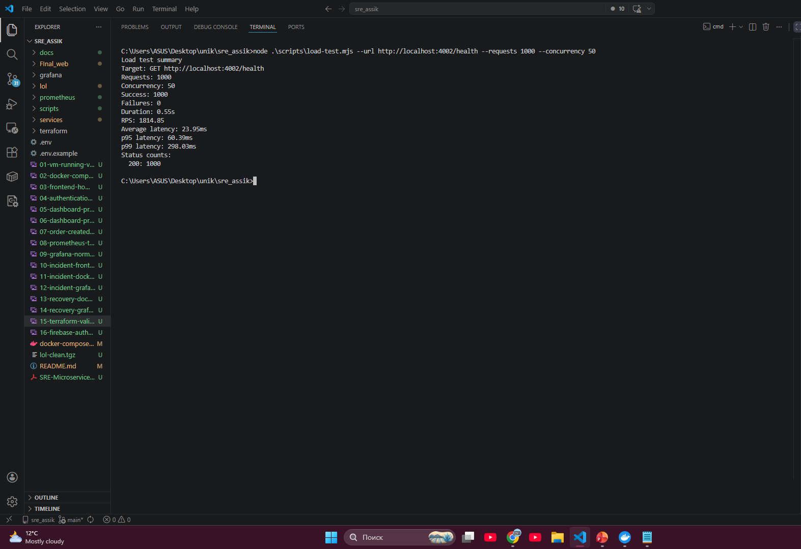
Figure 7. Load-test output for order-service: 1000 requests, 0 failures, and measured latency percentiles.
The Prometheus snapshot script collected target state, request rate, error rate, latency, CPU, memory, and restart metrics.
| Metric Group | Observation | Capacity Meaning |
|---|---|---|
| Targets up | All listed service targets returned value 1. | The stack stayed observable after the load test. |
| Error rate | Visible services reported 0.0000 error rate. | No HTTP error increase was detected after the test. |
| p95 latency | Approximately 0.0048 seconds in the Prometheus snapshot. | Prometheus latency remained low after smoothing over the query window. |
| CPU | All service processes were below 0.01 CPU cores in the snapshot. | The local health test did not saturate CPU resources. |
| Memory | Services used about 79 MB to 93 MB resident memory. | Memory was stable and below the configured high-memory alert threshold. |
| Restart count | order-service showed 1 recent restart. | This reflects the incident/recovery test, not an unexpected crash. |
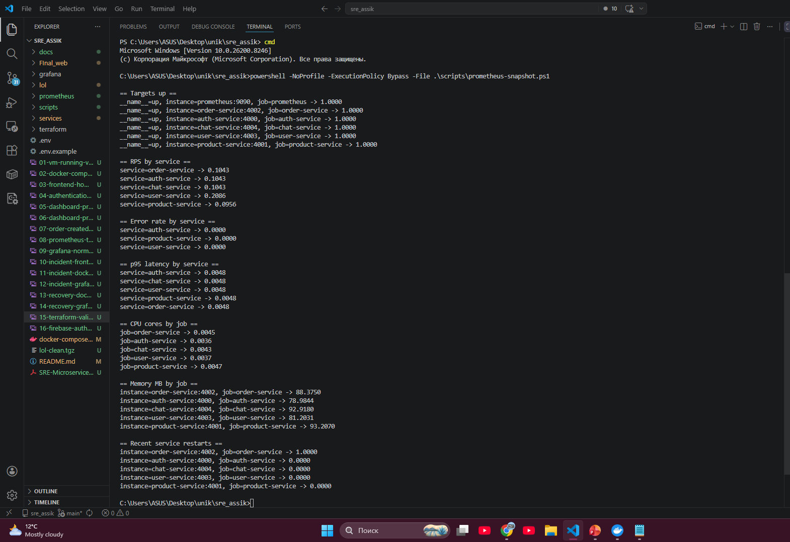
Figure 8. Prometheus snapshot after testing: RPS, error rate, p95 latency, CPU, memory, and restart data.
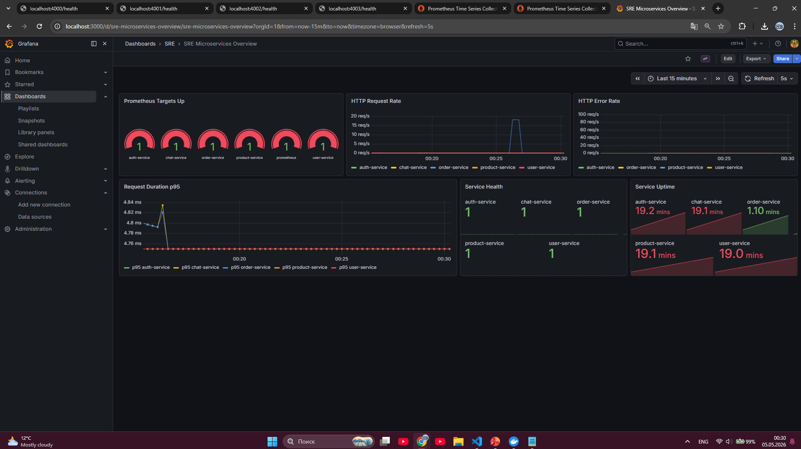
Figure 9. Grafana shows the request-rate spike for order-service and healthy service state after recovery.
The current local load test did not saturate CPU, memory, or latency thresholds. However, the architecture still has clear capacity risks:
The main conclusion is that the system is reliable under the tested local health-check load, but production-like capacity testing should use authenticated order creation and order history requests with realistic user data.
Recovery was tested by stopping order-service, observing Prometheus target failure, confirming a
firing ServiceDown alert, then starting order-service again and verifying that targets
returned to UP.
docker compose stop order-service docker compose up -d order-service
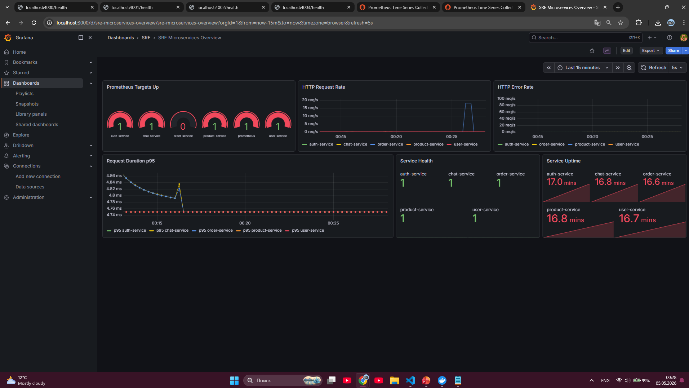
Figure 10. Grafana during the incident: order-service target is down while other services remain available.
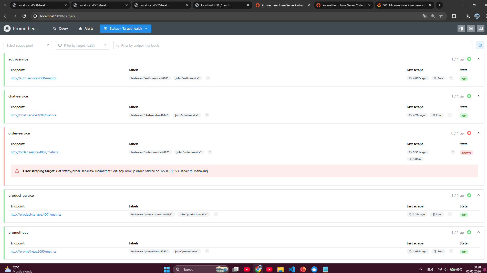
Figure 11. Prometheus target health shows order-service in the DOWN state.
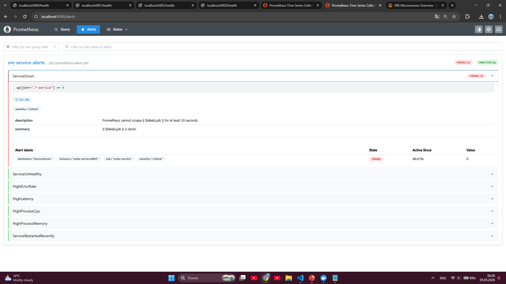
Figure 12. Prometheus alert ServiceDown is firing for order-service.
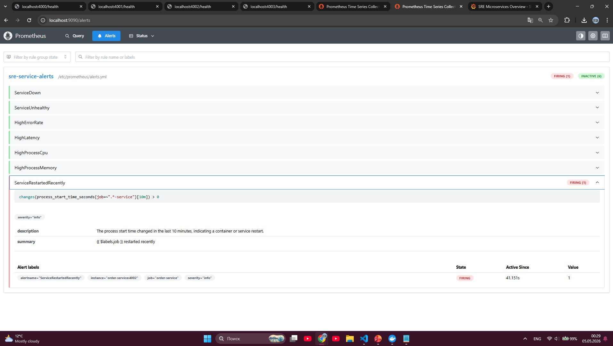
Figure 13. Prometheus detects that order-service restarted recently after recovery.
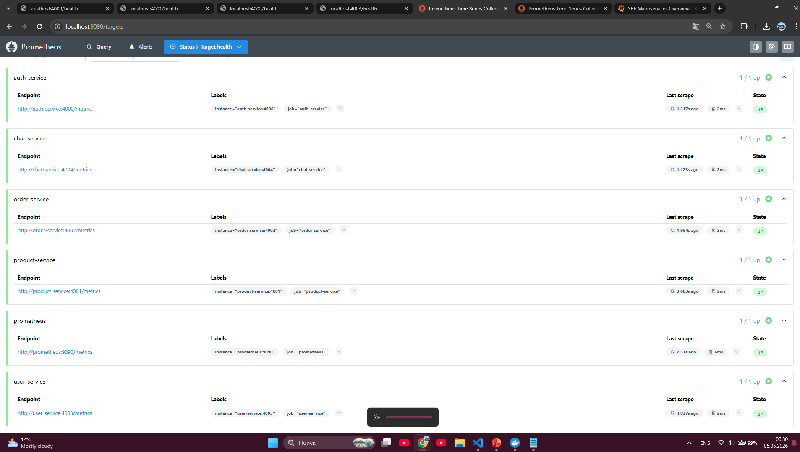
Figure 14. Recovery state: Prometheus target health shows all service targets back in the UP state.
The first horizontal scaling target should be order-service. Future deployment should run multiple
order-service replicas and place a load balancer or orchestrator in front of them.
order-service-1 order-service-2 order-service-3
Possible implementation options:
Terraform already owns VM infrastructure definitions. If load increases, the VM type can be increased through the
Terraform variable machine_type.
machine_type = "e2-medium"
Future larger option:
machine_type = "e2-standard-2"
userId and creation time.| Previous Finding | Improvement Added in Assignment 6 |
|---|---|
| Database misconfiguration caused service failure. | Pre-deployment validation checks MONGO_URL and rejects the known broken hostname. |
| Manual detection required checking containers and dashboards. | Prometheus alert rules detect service-down, unhealthy state, high errors, high latency, CPU, memory, and restarts. |
| Recovery depended on manual service restart. | Docker restart policies and health checks reduce manual recovery effort. |
| Infrastructure was defined with Terraform in Assignment 5. | Scaling strategy uses the existing Terraform machine_type variable for vertical scaling. |
The current implementation demonstrates automation, alerting, load simulation, and recovery. It does not fully implement production auto-scaling. Horizontal scaling, Kubernetes-based auto-scaling, and managed database scaling are proposed strategies rather than completed runtime features.
The load test is also intentionally limited to the /health endpoint. Authenticated order endpoints
require Firebase ID tokens, so a production-like test would need a token generation or login flow, seeded product
IDs, and realistic user scenarios.
Recommended next steps:
The system now includes practical SRE automation and observability improvements: validated configuration, health checks, automatic restart policies, Prometheus alert rules, Grafana dashboards, load testing, and recovery evidence. Capacity testing shows that the local order-service health endpoint remains stable under concurrent traffic with zero failures, while the architecture analysis identifies order-service and the shared database as the main capacity risks for future production-like workloads.